はじめに / 起動方法
semisim は半導体の前工程（成膜・リソグラフィ・エッチング・ ドーピング・平坦化など）を 3D ボクセル格子上で再現し、断面や 3D 形状を可視化、 さらに各種メトロロジで不良モードを定量検証できるシミュレータです。
| 用途 | コマンド |
|---|---|
| GUI 起動（対話的にレシピ作成・3D 表示） | py main.py |
| CLI でレシピ実行＋断面 PNG 出力 | py -m semisim.cli recipe.json --slice out.png |
| JSON メトロロジ／不良レポート出力 | py -m semisim.cli recipe.json --json-report report.json |
| Python API でレシピ構築 | Recipe(config=...).add(Process(...)).simulate() |
以下、代表的なプロセス操作ごとに、実際の出力断面（中央 Y 断面 = XZ 面、" 横が x・縦が z で下が基板）と説明を示します。
GUI 操作・設定画面操作
py main.py で GUI を起動します。左にプロセスレシピと層構成、
右に 3D ビューと2D 断面のタブが並ぶ操作画面です。
「工程を追加」から工程を選ぶと、その工程専用のパラメータ入力ダイアログが開き、
追加・編集するたびに 3D 形状と断面がその場で更新されます。
操作画面（メインウィンドウ）
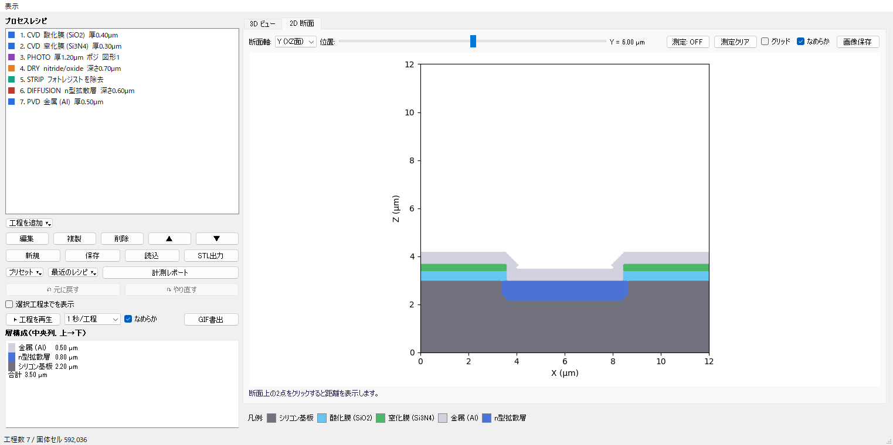
| 領域 | 役割 |
|---|---|
| プロセスレシピ（左上） | 工程を上から順に実行。ドラッグ/▲▼ で並べ替え、編集・複製・削除が可能。 |
| 工程を追加 / 編集 / 複製 / 削除 | 工程の追加と編集。各工程はパラメータ設定ダイアログで入力する。 |
| 新規 / 保存 / 読込 / STL 出力 | レシピ JSON の入出力と、3D 形状の STL エクスポート。 |
| プリセット / 最近のレシピ / 計測レポート | サンプルレシピの呼び出しと、メトロロジ検査レポートの表示。 |
| 層構成（左下） | 中央列の材料スタックと各層の膜厚・合計厚を一覧表示。 |
| 3D ビュー / 2D 断面タブ（右） | 立体形状の回転表示と、任意の XZ/YZ 断面表示。断面上 2 点クリックで距離計測。 |
ウェハ設定ダイアログ
「新規」からウェハ（ボクセル格子）の解像度と基板厚を設定します。X/Y/Z の ボクセル数とボクセル一辺の寸法（pitch）で実寸とメッシュ精度が決まります。
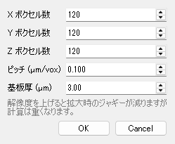
工程パラメータ設定ダイアログ（工程タイプごとに切替）
「工程を追加」で工程タイプを選ぶと、その工程に必要な入力欄だけが現れます。 代表的な工程の設定画面を示します。
フォトリソ (PHOTO)：レジスト厚・極性（ポジ/ネガ）・角丸め σ を 設定し、マスク図形エディタで矩形・円・帯・周期ラインを配置します。図形が無ければ 全面が対象になります。
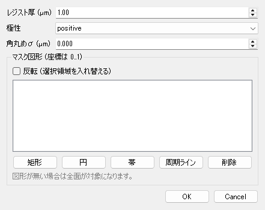
CVD 成膜：材料と膜厚、ローディング効果や表面ラフネスを設定。 等角性の高いコンフォーマル成膜を行います。
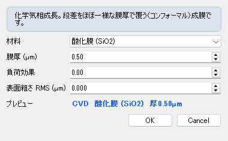
PVD 成膜：材料・膜厚に加え、段差被覆率（低いほど窪み底に
付きにくい）、オーバーハング(庇)、斜め蒸着 入射角 を設定。
被覆率を下げるとキーホールボイドが発生します。
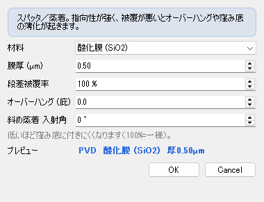
異方性ウェット (KOH)：結晶面依存エッチの対象・深さ・側壁角 （Si(111) の 54.7°）を設定し、台形断面の異方性エッチを再現します。
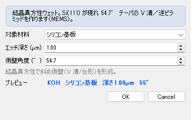
イオン注入 (IMPLANT)：ドーパント種・飛程 Rp・ストラグル ΔRp・ チルト角を設定し、ガウス分布の埋め込みドープ層を形成します。
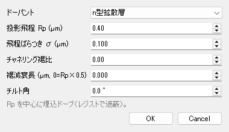
CMP 平坦化：研磨対象・除去量を設定し、上面を平坦化します。 ダマシン配線のディッシング/エロージョンも評価できます。
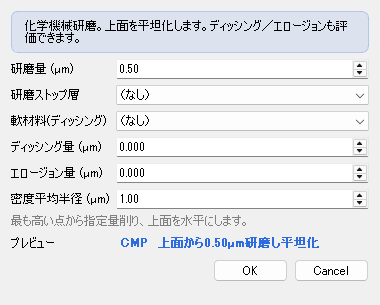
ウェハ基板基礎
シミュレーションは 3D ボクセル格子（[z, y, x]）で表現します。最下部にシリコン基板があり、その上に各プロセスで材料を積み上げ／削っていきます。下の図は中央 Y 断面（XZ 面）で、横が x、縦が z（下が基板）です。
| 主なパラメータ | 説明 |
|---|---|
nx, ny, nz | 格子分割数 |
pitch_um | 1 ボクセルの一辺[µm] |
substrate_um | 初期シリコン基板厚[µm] |
from semisim.grid import WaferConfig
from semisim.recipe import Recipe
cfg = WaferConfig(nx=200, ny=20, nz=140, pitch_um=0.04, substrate_um=2.0)
wafer = Recipe(config=cfg).simulate()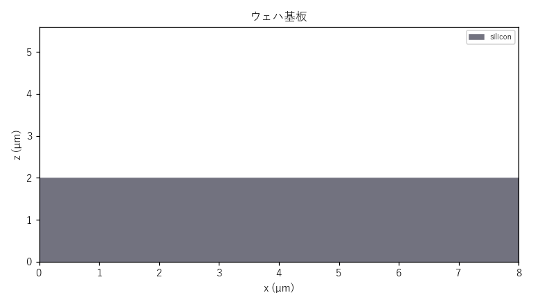
フォトリソグラフィ (Photo)リソグラフィ
フォトレジストを塗布し、マスクパターンで露光・現像してレジストをパターニングします。positive では開口部（露光部）のレジストが除去され、negative では逆になります。後続のエッチ／注入のマスクになります。
| 主なパラメータ | 説明 |
|---|---|
mask | マスク形状(rect/grating など) |
thickness_um | レジスト膜厚[µm] |
polarity | positive / negative |
from semisim.processes import Photo
from semisim.masks import Mask, Shape
mask = Mask(shapes=[Shape('grating', {'angle':90,'period':0.6,'width':0.3})])
r.add(Photo(mask=mask, thickness_um=0.8, polarity='positive'))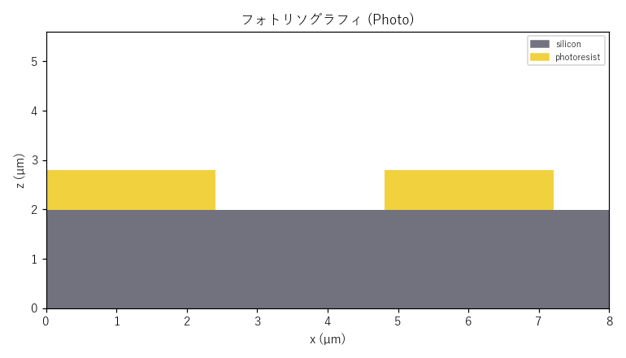
CVD 成膜 (CVD)成膜
化学気相成長。表面から等方的に材料を堆積します。段差があってもほぼ一様な膜厚で覆い（コンフォーマル）、トレンチ内壁にも回り込みます。下図はトレンチ付き酸化膜の上に窒化膜を CVD した断面です。
| 主なパラメータ | 説明 |
|---|---|
material | 成膜材料 |
thickness_um | 膜厚[µm] |
conformality | 段差被覆性(1=完全等方) |
from semisim.processes import CVD
r.add(CVD(material='nitride', thickness_um=0.2))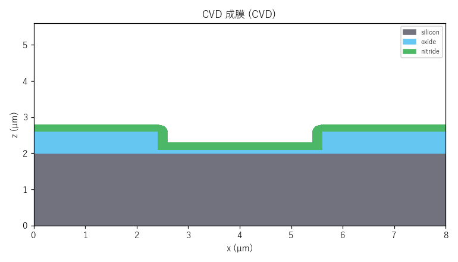
ALD 成膜 (ALD)成膜
原子層堆積。1 サイクルごとに原子層 1 層を成長させ、nm 精度で膜厚を制御します。CVD より優れたコンフォーマル性で、高アスペクト比の溝でも底まで均一に被覆します。High-k やバリア膜に用います。
| 主なパラメータ | 説明 |
|---|---|
material | 成膜材料(hafnia 等) |
cycles | サイクル数 |
growth_per_cycle_nm | 1 サイクル成長量[nm] |
from semisim.processes import ALD
r.add(ALD(material='hafnia', cycles=150, growth_per_cycle_nm=1.0))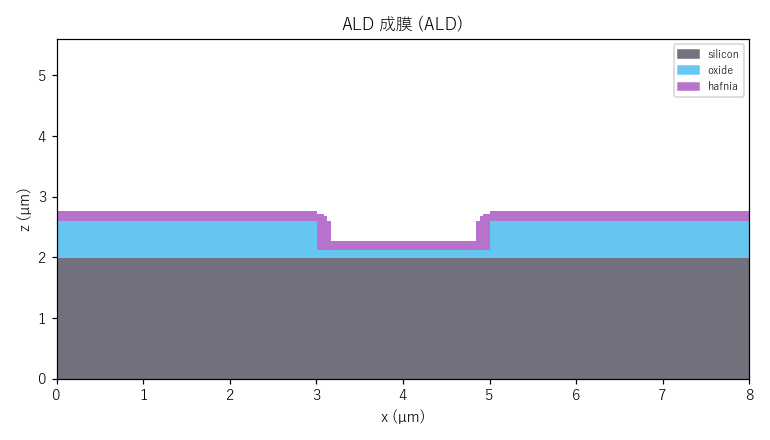
PVD 成膜 (PVD)成膜
スパッタ／蒸着による物理気相成長。指向性が強く、段差被覆性が悪いと上端にオーバーハング（庇）ができ、トレンチ側壁・底は薄くなります。step_coverage を下げるほど側壁被覆が悪化します。
| 主なパラメータ | 説明 |
|---|---|
material | 成膜材料 |
thickness_um | 平坦部膜厚[µm] |
step_coverage | 側壁/底の被覆率(0〜1) |
from semisim.processes import PVD
r.add(PVD(material='metal_al', thickness_um=0.3, step_coverage=0.4))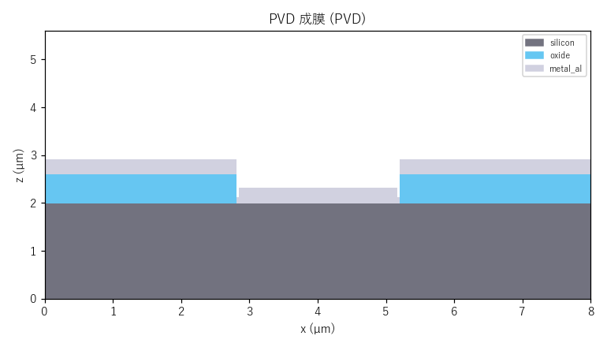
サイドウォールスペーサ (Spacer)成膜
コンフォーマル成膜＋異方性エッチバックの組合せ。水平面の膜を除去し、段差（ゲート等）の垂直側壁にだけ材料を残します。LDD やゲートスペーサを自己整合的に作る代表プロセスです。
| 主なパラメータ | 説明 |
|---|---|
material | スペーサ材料 |
thickness_um | スペーサ幅[µm] |
overetch_um | オーバーエッチ量[µm] |
from semisim.processes import Spacer
r.add(Spacer(material='nitride', thickness_um=0.08))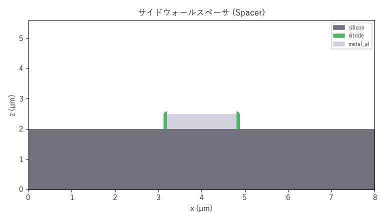
ピッチダブリング (SADP / 自己整合ダブルパターニング)微細化
リソ解像限界より細かい配線ピッチを作る先端微細化プロセスです。①被パターン層の上にマンドレル（犠牲芯材）を緩いピッチでパターニング → ②コンフォーマル成膜＋異方性エッチバックで側壁スペーサを残す → ③マンドレルを引き抜くと1 本のマンドレルから 2 本のスペーサが自立しピッチが半分（線密度2倍）になります → ④スペーサをハードマスクに下地へ転写。本例は 3 本のマンドレルから6 本のフィンを形成しています（2×）。スペーサ幅がそのまま最終線幅になるため、露光波長に依存しないサブリソ寸法が得られます。
| 主なパラメータ | 説明 |
|---|---|
マンドレル | Photo で緩ピッチに形成 |
Spacer.thickness_um | スペーサ幅＝最終線幅[µm] |
Strip | マンドレル引き抜き |
DryEtch.targets | 転写する下地層 |
from semisim.processes import CVD, Photo, Spacer, Strip, DryEtch
r.add(CVD(material='poly', thickness_um=0.30)) # 被パターン層
r.add(Photo(mask=mandrels, thickness_um=0.30)) # マンドレル
r.add(Spacer(material='oxide', thickness_um=0.08)) # 側壁スペーサ
r.add(Strip(material='photoresist')) # マンドレル引き抜き
r.add(DryEtch(targets=['poly'], depth_um=0.32)) # 下地へ転写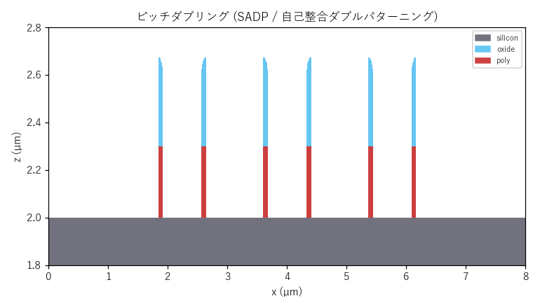
ドライエッチング (DryEtch)エッチング
プラズマによる異方性エッチング。ほぼ垂直な側壁の溝／ホールを形成します。レジスト開口部の直下のみが削れ、横方向にはほとんど広がりません。
| 主なパラメータ | 説明 |
|---|---|
targets | エッチ対象材料リスト |
depth_um | エッチ深さ[µm] |
lateral_bias_um | 横方向バイアス |
arde_lag_um | ARDE/RIE ラグ |
from semisim.processes import DryEtch
r.add(DryEtch(targets=['oxide'], depth_um=0.6))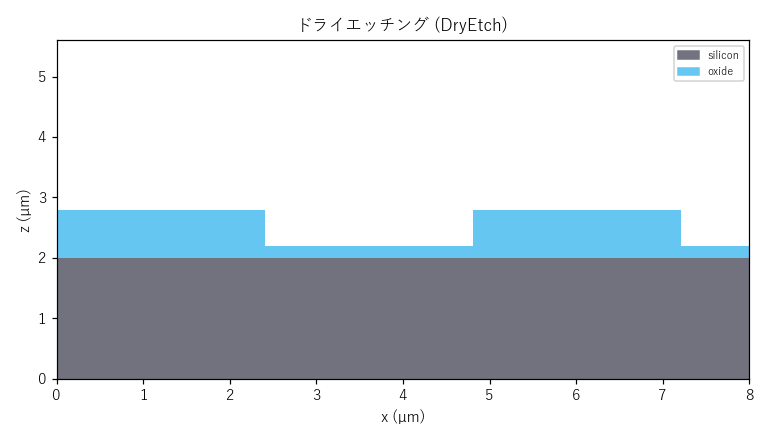
ウェットエッチング (WetEtch)エッチング
薬液による等方性エッチング。縦と同程度に横方向へも削れるため、マスク（レジスト）の下に回り込むアンダーカットが生じます。lateral_ratio で等方〜異方を連続調整できます。レジストを残したまま示しています。
| 主なパラメータ | 説明 |
|---|---|
targets | エッチ対象材料 |
depth_um | エッチ深さ[µm] |
lateral_ratio | 横/縦エッチ比(1=完全等方) |
from semisim.processes import WetEtch
r.add(WetEtch(targets=['oxide'], depth_um=0.5, lateral_ratio=1.0))ALE 原子層エッチ (ALE)エッチング
原子層エッチ。1 サイクルで原子層レベルの極薄量だけ自己制限的に除去し、cycles×etch_per_cycle_nm で nm 精度に深さを制御します。対象以外の材料で完全停止（高選択比）し、anisotropy で等方コンフォーマル〜純垂直を切替えます。ALD（成膜）の対となる先端ノード向けの高精度エッチです。
| 主なパラメータ | 説明 |
|---|---|
targets | エッチ対象材料 |
cycles | サイクル数 |
etch_per_cycle_nm | 1 サイクル除去量[nm] |
anisotropy | 0=等方/1=垂直 |
from semisim.processes import AtomicLayerEtch
r.add(AtomicLayerEtch(targets=['oxide'], cycles=300,
etch_per_cycle_nm=1.5, anisotropy=0.3))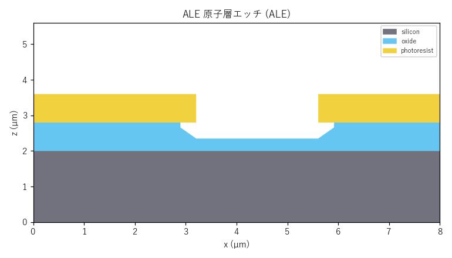
結晶異方性ウェット (AnisoWetEtch)エッチング
KOH/TMAH による結晶面依存エッチング。Si(100) では (111) 面が現れ、54.7° のテーパを持つ V 字溝／逆ピラミッドを形成します。MEMS のマイクロ構造作製に使います。
| 主なパラメータ | 説明 |
|---|---|
target | エッチ対象(silicon) |
depth_um | エッチ深さ[µm] |
sidewall_angle_deg | 側壁角(54.7°=Si(111)) |
from semisim.processes import AnisoWetEtch
r.add(AnisoWetEtch(target='silicon', depth_um=1.6, sidewall_angle_deg=54.7))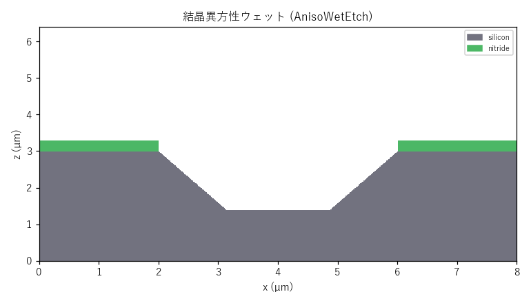
深掘り RIE / Bosch (DRIE)エッチング
Bosch プロセスによる深掘りエッチ。エッチと側壁保護を交互に繰り返すため、側壁に特徴的なスキャロップ（扇状の凹凸）が残ります。高アスペクト比のTSV やトレンチに用います。
| 主なパラメータ | 説明 |
|---|---|
target | エッチ対象 |
depth_um | 深さ[µm] |
scallop_um | スキャロップ深さ |
scallop_pitch_um | スキャロップ周期 |
from semisim.processes import DRIE
r.add(DRIE(target='silicon', depth_um=3.0, scallop_um=0.12, scallop_pitch_um=0.35))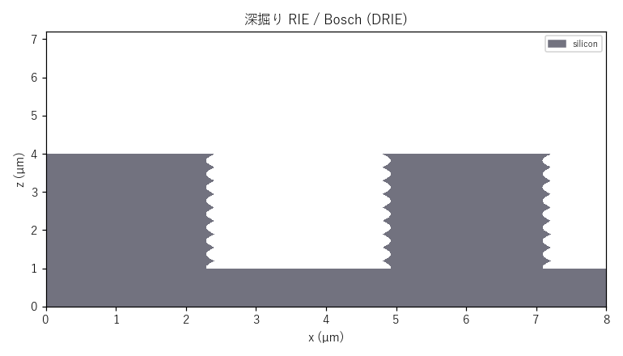
熱酸化 (Oxidation)ドーピング・熱処理
露出シリコンを熱酸化し SiO2 に変えます。SiO2 は元の Si より体積膨張するため、約 45% の Si を消費しつつ上方へ成長します。窒化膜マスク端では酸化膜が横に侵入する LOCOS の『バーズビーク』を再現します。
| 主なパラメータ | 説明 |
|---|---|
thickness_um | 酸化膜厚[µm] |
consume_fraction | Si 消費比(≈0.45) |
beak_fraction | バーズビーク横侵入比 |
time_min/temperature_c | Deal-Grove モード |
from semisim.processes import Oxidation
r.add(Oxidation(thickness_um=0.4, beak_fraction=0.8))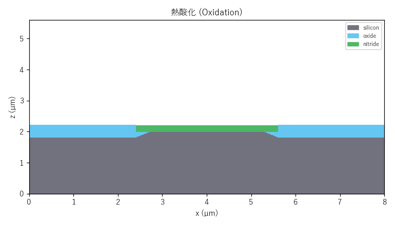
イオン注入 (Implant)ドーピング・熱処理
ドーパントイオンを加速して打ち込みます。飛程 Rp を中心にガウス分布（ストラグル）で濃度がピークを持ち、レジスト開口部だけがドープされます。下図は n 型注入層（doped_n）の埋め込み分布です。
| 主なパラメータ | 説明 |
|---|---|
dopant | ドーパント(doped_n/doped_p) |
range_um | 飛程 Rp[µm] |
straggle_um | 縦方向ストラグル ΔRp[µm] |
tilt_deg | 注入チルト角 |
from semisim.processes import Implant
r.add(Implant(dopant='doped_n', range_um=0.6, straggle_um=0.18))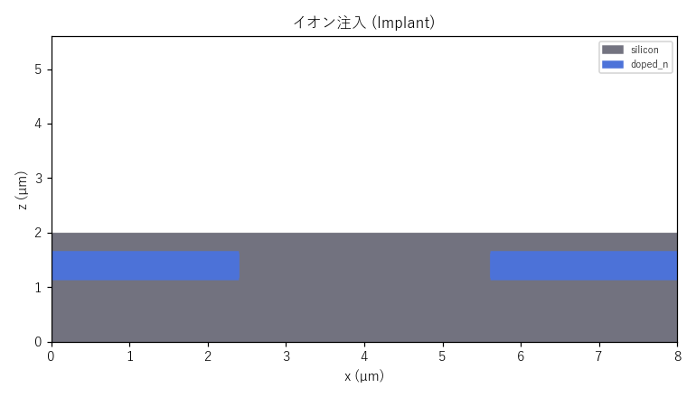
アニール / 拡散 (Anneal)ドーピング・熱処理
高温熱処理でドーパントを活性化し、濃度勾配に従って拡散させます（ドライブイン）。注入直後の急峻な分布が、時間 √(D·t) に比例して縦横へ広がります。
| 主なパラメータ | 説明 |
|---|---|
depth_um | 基準ドライブイン深さ[µm] |
time_min | アニール時間[分] |
temperature_c | 温度[℃] |
from semisim.processes import Anneal
r.add(Anneal(depth_um=0.5, time_min=60, temperature_c=1050))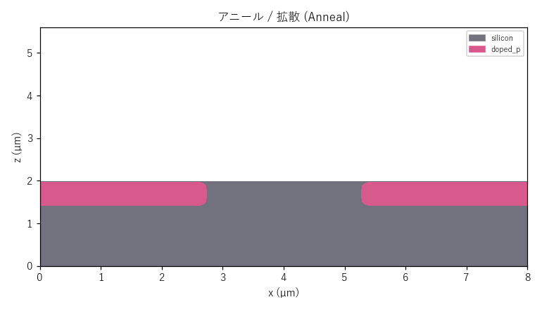
エピタキシャル成長 (Epitaxy)成膜
単結晶を下地の結晶情報を引き継いで成長させます。酸化膜上には成長せず、露出シリコン上にのみ選択的に成長する選択エピを再現します（SiGe ソースドレイン等）。
| 主なパラメータ | 説明 |
|---|---|
material | エピ材料(epi_si 等) |
thickness_um | 成長厚[µm] |
selective | 選択成長フラグ |
from semisim.processes import Epitaxy
r.add(Epitaxy(material='epi_si', thickness_um=0.6))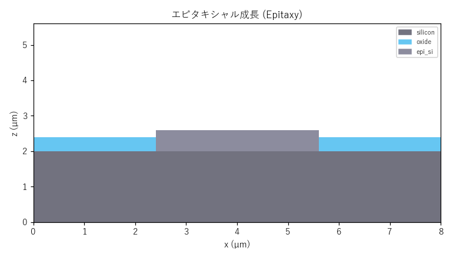
ダマシン配線 + CMP ディッシング (Fill / CMP)平坦化・配線
絶縁膜にトレンチを掘り、バリア(TiN)→Cu 充填→CMP 平坦化する銅配線形成です。CMP では軟らかい Cu が過研磨で皿状に凹むディッシングが起き、中央ほど深く・縁（絶縁膜際）ほど浅い凹面になり、配線幅が広いほど深く凹みます（左の太線が右の細線より深い）。実機の幅依存ディッシングを距離変換ベースの飽和プロファイルで再現しています。
| 主なパラメータ | 説明 |
|---|---|
Fill.material | 充填材料(metal_cu) |
Fill.overfill_um | オーバーフィル量 |
CMP.dishing_um | 最大ディッシング深さ[µm] |
CMP.dishing_width_um | 幅依存の特性幅[µm] |
CMP.erosion_um | パターン密度エロージョン |
from semisim.processes import Fill, CMP
r.add(Fill(material='metal_cu', overfill_um=0.4))
r.add(CMP(remove_um=0.5, stop_material='oxide',
soft_material='metal_cu', dishing_um=0.25, dishing_width_um=0.3))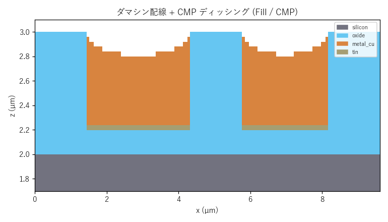
リフトオフ (LiftOff)平坦化・配線
レジストパターン上に金属を成膜し、レジストを溶解除去すると、レジスト上の金属も一緒に剥がれ、開口部の金属だけが残ります。エッチしにくい金属の微細パターン形成に使います。
| 主なパラメータ | 説明 |
|---|---|
(パラメータなし) | 直前の PVD 膜とレジストから自動処理 |
from semisim.processes import LiftOff
r.add(LiftOff())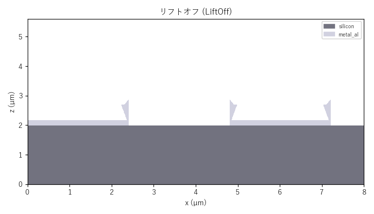
不良モード検証 (metrology)検証
本シミュレータは主要な半導体不良モードを計測 (metrology) で検証できます。下図は段差被覆（ステップカバレッジ）の悪い PVD で高アスペクト比トレンチを埋めた例です。側壁より口元の堆積が速いため上端が先に閉じ、内部に上方ほど細るキーホール（ティアドロップ）状の埋め込みボイドが残ります（void_metrics 個数=1 → 検出）。口元が塞がった瞬間に内部の空気は最上面との連結が切れ、以降フラックスが届かず空洞として凍結する——という実プロセスの封止機構をそのまま再現しています。
| 不良モード | 計測関数 |
|---|---|
| ボイド（充填不良） | void_metrics |
| エッチ残渣・ストリンガー | etch_residue_metrics |
| アンダーカット | undercut_um |
| ピンホール（貫通欠陥） | pinhole_metrics |
| オープン（断線） | electrical_continuity / line_resistance_ohm |
| ショート | min_spacing_um |
| ディッシング・エロージョン | dishing_depth_um |
| ウェハ反り（膜応力） | wafer_bow_um |
| 一括検査 | defect_report |
metrology.defect_report(wafer) でこれらを横断検査した機械可読な辞書が得られ、CLI の --json-report 出力にも defects として含まれます。本例の検出材料数: 2。
from semisim import metrology
rep = metrology.defect_report(wafer)
print(rep['voids'], rep['per_material'])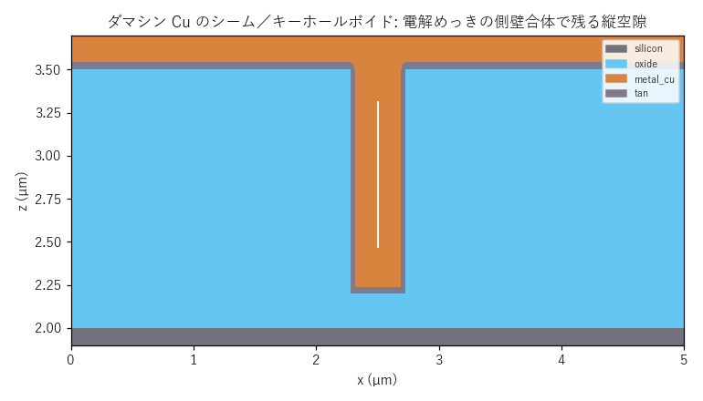
電気・熱・信頼性の検証 (metrology)検証
形状だけでなく、できあがったデバイス構造の電気・熱・機械・信頼性特性を計測 (metrology) と専用ソルバ（semisim/litho.py 含む）で検証できます。代表的な検証関数と、酸化膜中の並走 Cu/W 配線＋Al 基準面の構造に対する実測値の例を示します。
| 検証項目 | 関数 | 内容・数値例 |
|---|---|---|
| 寄生容量（平行平板） | parasitic_capacitance_ff | 0.221 fF（配線間カップリング, ε0·εr·A/d を厳密積算） |
| 寄生容量（静電界ソルバ） | parasitic_capacitance_field_ff | 0.000 fF（∇·(εr∇φ)=0 を疎行列で解きフリンジ込み） |
| RC 遅延 | rc_delay_ps | τ=R·C による配線遅延 |
| 分布 RC Elmore 遅延 | elmore_delay_ps | τ=Σ(ΣR)·C。一様線で ½RC（分布効果） |
| 伝送線路パラメータ | transmission_line_params | Z0・インダクタンス・信号速度 v=c/√εr・伝搬遅延（高速配線 RLC） |
| 配線総合レポート | interconnect_report | R/C/L/Z0/遅延/電流密度/EM/IRドロップ/断線を1コールで集計 |
| ロジックゲート遅延 | gate_switching_delay_ps | CV/I モデル τ=C·Vdd/I_drive |
| MOS ゲート容量 / EOT | mos_gate_capacitance | Cox=ε0/Σ(tᵢ/εrᵢ), EOT。high-k で EOT 薄化 |
| MOS C-V 特性 / Vth | mos_cv_curve / threshold_voltage_v | 空乏近似の高周波 C-V（蓄積→空乏→反転）としきい値電圧・空乏層幅 |
| 短チャネル Vth / DIBL | short_channel_vth_v | Vth ロールオフ（SCE）+ ドレイン誘起障壁低下（DIBL） |
| 接合リーク電流 | junction_leakage_a | 逆リーク∝ni(T)²·面積。温度で指数加速（待機電力） |
| DRAM リテンション時間 | dram_retention_time_s | t_ret=C·ΔV/I_leak。容量＋接合リークでリフレッシュ周期を評価 |
| ソフトエラー臨界電荷 | critical_charge_fc | Q_crit=C·V。SEU（ビット反転）耐性 |
| ダイオード I-V | diode_current / diode_iv_curve | Shockley 式。順方向指数・逆方向 −Is 飽和・直列抵抗で高電流飽和 |
| MOS 小信号特性 | mos_small_signal | gm=∂Id/∂Vg・gds=∂Id/∂Vd・真性利得 Av=gm/gds（飽和域で高利得） |
| pn 接合 空乏層容量 | junction_capacitance / junction_cv_curve | ビルトイン電位・空乏層幅・接合容量。1/Cj²-V 直線（C-V プロファイリング） |
| MOS I-V 特性 | mos_drain_current / mos_iv_curve | Idsat∝(Vg−Vth)²・三極管/飽和・サブスレショルド傾斜 SS≈n·60mV/dec |
| 配線抵抗 / シート抵抗 | line_resistance_ohm / sheet_resistance_ohm_sq | 断面積を考慮した直列抵抗・薄膜評価 |
| Maxwell 容量行列 | capacitance_matrix_ff | 複数導体の自己容量・全結合容量を抽出（標準的 RC 抽出, 遮蔽も再現） |
| 対全導体総容量 | total_net_capacitance_ff | 対象を1V・他全導体を接地で解くドライバ実効負荷容量 |
| 電源 IR ドロップ | ir_drop_v | ΔV=I·R による電源配線の電圧降下（パワーインテグリティ） |
| 温度依存抵抗（TCR） | resistance_at_temperature | R(T)=R₀(1+TCR·ΔT)。金属は高温で抵抗増（自己発熱と正帰還） |
| 電流密度 / EM リスク | current_density_stats / electromigration_risk | J_max=5.00e+05 A/cm², 余裕=4.00 |
| 電流密度プロファイル | current_density_profile | 配線に沿った J(x)。ネッキング=EM ホットスポット位置を可視化 |
| TLM 接触抵抗抽出 | tlm_extract | R vs コンタクト間隔の直線回帰で Rc・シート抵抗・伝送長 Lt を抽出 |
| EM 寿命（Black） | electromigration_mttf / em_lifetime_wafer | MTTF=2.756e+09（相対, MTTF=A·J⁻ⁿ·exp(Ea/kT)） |
| EM Blech 不死条件 | blech_immortal | j·L < (jL)_crit で EM 免疫（短配線は故障しない） |
| 自己発熱結合 EM 寿命 | em_lifetime_self_heated | ジュール発熱の ΔT を接合温度に加え Black 式で評価（正帰還） |
| HCI 寿命 | hci_lifetime | ホットキャリア注入 TTF=A·exp(B/Vds)。ドレイン電圧律速の劣化 |
| NBTI しきい値劣化 | nbti_vth_shift | |ΔVth|∝exp(γ|V|)·exp(−Ea/kT)·tⁿ。電圧/温度/時間で pMOS 経時劣化 |
| 絶縁破壊 / TDDB 寿命 | dielectric_breakdown / tddb_lifetime | E=V/g vs 破壊電界, E モデル寿命 |
| アンテナ比 | antenna_ratio | プラズマ帯電損傷 DRC（収集面積/ゲート面積） |
| 縦方向熱抵抗 | thermal_resistance_k_w / thermal_resistance_map | R=ΣΔz/(k·A) を列毎に算出し並列合成 |
| 自己発熱 ΔT | temperature_rise_k / joule_self_heating_k | ΔT=P·Rth, ジュール発熱 P=I²R |
| 熱拡散ソルバ（温度分布） | temperature_field_2d / peak_temperature_rise_k | ∇·(k∇T)=−q で横方向ヒートスプレッディングを解く |
| 完全 3D 熱拡散ソルバ | temperature_field_3d / peak_temperature_rise_3d | 局所発熱を x・y・z の 3 方向に等方拡散（断面ソルバの上位） |
| 局所応力集中 | stress_concentration_map / max_stress_concentration | 界面 Δσ×幾何係数でクラック/剥離リスク箇所を検出 |
| ウェハ反り（膜応力） | wafer_bow_um | Stoney 則による等価反り |
| 歩留り推定 | yield_estimate | Poisson/Murphy/Seeds モデル |
| クリティカルエリア解析 | critical_area_short_um2 / caa_short_yield | 欠陥径ごとの臨界面積を距離変換で算出しサイズ分布で積分→ショート歩留り |
| 平坦化 DOF バジェット | planarization_dof_check | 表面トポグラフィをリソ焦点深度と比較し焦点外れ面積率を判定 |
| ソルバ収束検証 | estimate_convergence_order | 容量・熱拡散ソルバが格子細分で解析解へ約1次収束することを定量検証 |
| リソ プロセスウィンドウ | litho.bossung / process_window / meef / EPE | 空間像モデルで CD・DOF・露光裕度・MEEF・EPE を評価 |
| リソ CD 統計ばらつき | litho.monte_carlo_cd | 露光/焦点変動のモンテカルロで CDU(3σ)・規格内歩留りを統計評価 |
from semisim import metrology, litho
# 寄生容量と RC 遅延
c = metrology.parasitic_capacitance_ff(wafer, 'metal_cu', 'tungsten')
# 静電界ソルバ（フリンジ込み）
c2 = metrology.parasitic_capacitance_field_ff(wafer, 'metal_cu', 'tungsten')
# EM 寿命（最小断面の電流密度から）
life = metrology.em_lifetime_wafer(wafer, 'metal_cu', current_ma=1.0, temperature_c=110)
# 熱拡散による温度分布
T = metrology.temperature_field_2d(wafer, source_mask, total_power_w=0.1)
# リソ プロセスウィンドウ
cd = litho.printed_cd_um(litho.isolated_space_mask(0.1, 0.005), 0.005)出力・レポート出力
シミュレーション結果は以下の形式で出力できます。
| 出力 | 内容 |
|---|---|
断面 PNG (--slice) | 任意の XZ/YZ/XY 断面画像 |
3D STL (--stl) | 材料ごとのソリッドメッシュ（CAD/3D 表示用） |
テキストレポート (--report) | 膜厚・段差・電気特性・DRC など人間可読サマリ |
JSON レポート (--json-report) | メトロロジ + electrical + defects の機械可読辞書 |
GUI（py main.py）では、レシピを 1 ステップずつ追加しながら 3D"
形状をリアルタイムに確認でき、任意断面のスライス表示やメトロロジ値の参照も可能です。